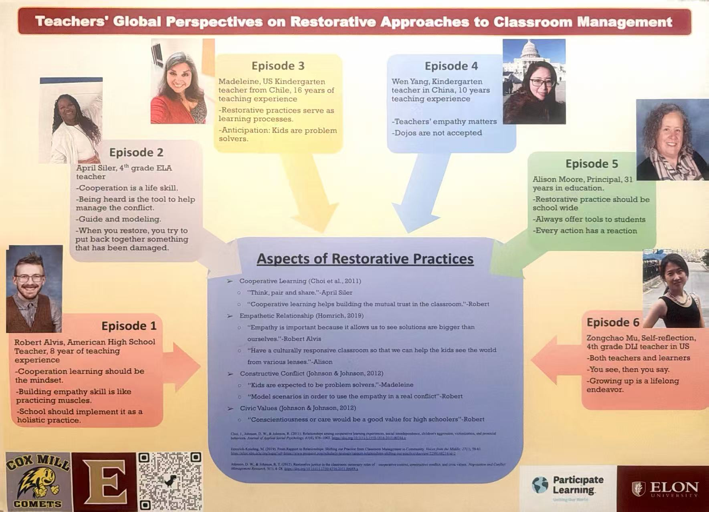

In-progress / Incoming Fall 2026
Ph.D. in Education
University of North Carolina at Charlotte
Curriculum and Instruction
Focus: Curriculum and Educators Development
Charlotte, NC
Educator · Researcher-in-Training
Zongchao Mu
Supporting multilingual learners through inclusive curriculum, immersive instruction, and cross-cultural research.
01 / Professional Summary
Highly accomplished educator and researcher-in-training with over 11 years of extensive experience supporting multilingual and bilingual learners in K–12 and immersive settings. A current Ph.D. student at UNC Charlotte specializing in Curriculum and Instruction, combining deep practical teaching expertise with emerging quantitative research capabilities, cross-cultural qualitative research, and foundational Python programming.
02 / Education
In-progress / Incoming Fall 2026
University of North Carolina at Charlotte
Curriculum and Instruction
Focus: Curriculum and Educators Development
Charlotte, NC
Graduation Year: 2024
Elon University
Honors: Member of Phi Kappa Phi Honor Society
Elon, NC
Graduation Year: 2010
Zaozhuang University
Shandong, China
03 / Technical & Language Skills
Foundational Python (basic logic, control flow, Turtle Graphics) and foundational algebra.
Wordwall, Kahoot, Quizizz, Seesaw, BrainPOP, Generation Genius, and Flocabulary.
Native Mandarin Chinese and fluent English; bilingual instructor.
04 / Research Background

Capstone Research Poster
Teachers' Global Perspectives
Graduate Researcher · Elon University
05 / Professional Teaching Experience
Aug 2021 – Present
Harrisburg Elementary School & Cox Mill Elementary School
Cabarrus County, NC
Chinese Vocabulary Learning Hub
Interactive Chinese vocabulary practice for multilingual learners.
Open learning resourceMay 2014 – Jun 2021
China
IELTS Speaking Learning Hub
Interactive resources for IELTS Speaking practice, strategies, and confidence building.
Explore IELTS Speaking resource06 / Presentations & Engagement
Conference Presentation
Cultural Ambassador Panels
Fall 2026 Cultural Ambassador Panel
Panelist · Fall 2026
Cultural Ambassador Fulbright Panel
Panelist · 2026
07 / Licensure & Professional Affiliations
California & North Carolina State Board of Education
Endorsements: Elementary Education (K–6) and English as a Second Language (ESL K–12).
Chinese Language Teachers Association of North Carolina
Engages in state-level PLCs focused on language technology integration and curriculum mapping.
08 / Awards & Honors
Phi Kappa Phi Honor Society
Elected Member · Elon University
Teacher of the Month Nominee
Cox Mill Elementary School
National Scholarship
Shandong Agricultural Administrators' College